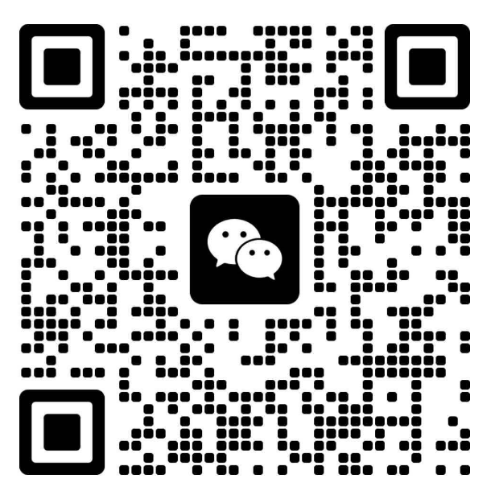

AI × HR 交叉话题，实战经验分享
五层治理框架，从知识治理到组织治理的递进路径
1 人 + AI Agent 团队的 OPC 项目执行方法论
HR 从业者如何拥抱 AI，问查办一体化实践案例
能力 × 意愿双轴评测体系，落地企业 AI 成熟度诊断
两天实操课程，从 RAG 搭建到多 Agent 协同闭环
扫码关注公众号
AI 原生组织实践笔记、HR × AI 落地案例、AI Agent 开发心得
持续更新，欢迎关注。
讲课邀约、项目合作、交流探讨，都欢迎
扫码添加，备注来意
